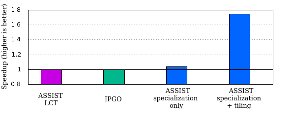

Home - Publications - Getting Started - Tutorials - MAQAO - MAQAO Team
Tutorials
Example on ABINIT -- Ti256 dataset
Protocole
Here we present how to transform an industrial open source code: ABINIT; which have been chosen with the test case “Ti-256” due to results we obtained with very little efforts. All sources codes and makefile can be found here. ABINIT is a software suite to calculate the optical, mechanical, vibrational, and other observable properties of materials. Thanks to some tools we detected that all the compute part is perform in the file opernlb_ylm.F90 and some variables are always used with the same value. So we decided to specialize the hotspot function and set values of these variables. Before to start, we had to generate all RMOD files needed to correctly handle of Fortran file. A RMOD file is a representation of a Fortran module with only declarations of functions and variables contained in the module needed by Rose to handle the use of modules. To generate all RMOD file of a directory with one command, you had to launch the following command from the root of sources:$maqao s2s –generateAllRMOD=.
This command has the effect of creating RMOD files of all Fortran modules in the current folder and in all subfolders. The dot can be replace by a path to all modules. RMOD files will be create in he same folder as the corresponding module. Rose manage badly defines, if you have some, you have to way to handle them; first, you can preprocess the file with the option “-cpp” of most of compiler, or replace directly the define by its value. For ou example we had to correct this Rose's shortcomings by modifying one RMOD file (“m_xmpi.rmod”) by replacing the macro: "ABI_PROTECTED” with its equivalent: “, protected” and the file opernlb_ylm.F90 by preprocessing it. By performing a full profiling of the code, three input parameters were found to be of importance. First, the function can be called with two different types of input data, either real-valued data or complex-valued data. A given test case will almost exclusively use one or the other. As those data are expressed as an array with one or two elements in a part of the code, specialization of this value simplifies address computations and vector accesses by making the stride a compile-time constant rather than a dynamic value. Second, multiple variants of the algorithm are implemented in the function. Which exact variant is used, depends on two integer parameters. Again, a given test case is usually heavily biased towards a small subset of possible cases. The specialization of one case allows to remove multiple conditionals. For a given case, different branches appears in the loop nests. This removal of conditionals exposes the true dynamic chaining of the loop nest directly to the compiler with no intervening control-flow break. Therefore, the second step is to add directives to specialize the function and tiling an heavy loop where a large array is updated in its entirety; a bad pattern for cache usage. The following command will apply transformations according to directives in the opernlb_ylm file, we indicate where are folder and subfolders containing RMOD files with the option “-I”. A value profiling allowed us to know which values were used for the three parameters.
!DIR$ MAQAO SPECIALIZE(choice=1, paw_opt=3, cplex=2) !DIR$ MAQAO SPECIALIZE(choice=1, paw_opt<3, cplex=2) !DIR$ MAQAO SPECIALIZE(choice=1, paw_opt>3, cplex=2) subroutine opernlb_ylm (...) ... !DIR$ MAQAO TILE_IF_SPE_choicee1=8 do k=1,npw ztab(k)=ztab(k)+ffnl(k,1,ilmn)*cmplx(gxfacs_(1,ilmn),gxfacs_(2,ilmn),kind=dp) end do
$maqao s2s –src=opernlb_ylm.F90 –option=”apply_directives” –I=/home/test/abinit/src/
Which will create a maqao_opernlb_ylm.F90 with three specialized function variants “opernlb_ylm” where variables “choice” is set to 1, “cplex” is set to 2 and among these versions, one has “paw_opt” set to 3 and the others take into account that it is strictly less than or greater than 3; and in each version where choice is set to 1, the critical loop nest is subsequently tiled, but only in the specialized versions. In practice, the innermost loop is removed by the compiler which fully unrolls and vectorizes it. If we replace the file opernlb_ylm.F90 by this new one generate by ASSIST and re-launch the makefile it will compile and be optimize for the dataset “Ti-256”. For more information and results, look at the paper of ASSIST: “ASSIST: a feedback-directed optimization source to source transformation tool for HPC applications”.
Results
Tests have been performed using the Intel compiler version 17 on an Intel(R) Xeon(R) CPU E5-2670 0 @ 2.60GHz## Load the intel compiler version 17 module load intel/17.0.4 #COMPILE Wallclock icc -c wallclock.c -o wallclock_icc17.o #COMPILE opernlb ## ORIG ifort -g -diag-disable 5268 -stand f95 -O3 -march=native -mtune=native opernlb_ylm_pp.f90 test_choice1_cmplex2_paw3_nofunction.F90 wallclock_icc17.o -o test_orig_icc17 ## ASSIST (spe + blocking) ifort -g -diag-disable 5268 -stand f95 -O3 -march=native -mtune=native maqao_opernlb_ylm_pp.f90 test_choice1_cmplex2_paw3_nofunction.F90 wallclock_icc17.o -o test_maqao_icc17 ## Execution time comparison ./test_orig_icc17 time (sec):2.39738392829895 ./test_pgo_icc17 time (sec):2.40033602714539 ./test_maqao_icc17 time (sec):1.57686400413513
Speedup results are shown in figure below. We added IPGO to show the potential of our approach. Specialization offers a small gain but the dominant issue is still the time spent in the critical loop nest. Adding tiling offers a large gain of almost 1.8x in total by significantly reducing the memory bandwidth of the critical loop nest.
